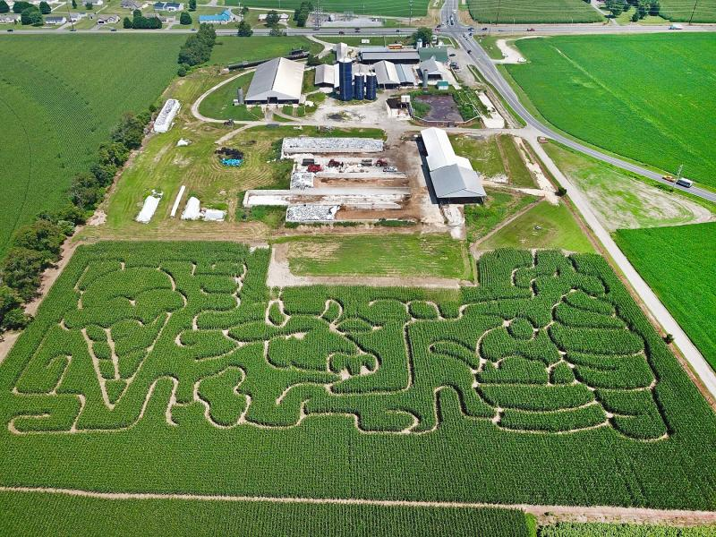

Welcome to Green Acres Farm, where the air is fresh, the dirt is real, and the pace of life slows down just enough to enjoy it. Whether you’re here to pick your own produce, visit the animals, or just reconnect with where your food comes from, we’re thrilled to have you on the homestead.
Our website serves as a digital fence-post for the Green Acres community, famously powered by a repurposed tractor battery and a solar array tucked behind the pumpkin patch. While most visitors come for the "What’s Growing" tracker, the site’s true claim to fame is the Barnyard Live Feed, which once accidentally went viral when a rogue rooster named General Tso knocked the camera into a bucket of slop. We’ve also hidden a "secret harvest" Easter egg: if you hover your mouse over the scarecrow icon, the page background changes to the exact shade of the current sunset over our north pasture. It’s a little bit high-tech, a little bit "high-hay," and occasionally runs a bit slow on rainy days—but that’s just life at farm speed.